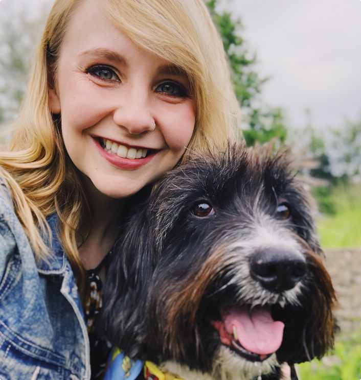
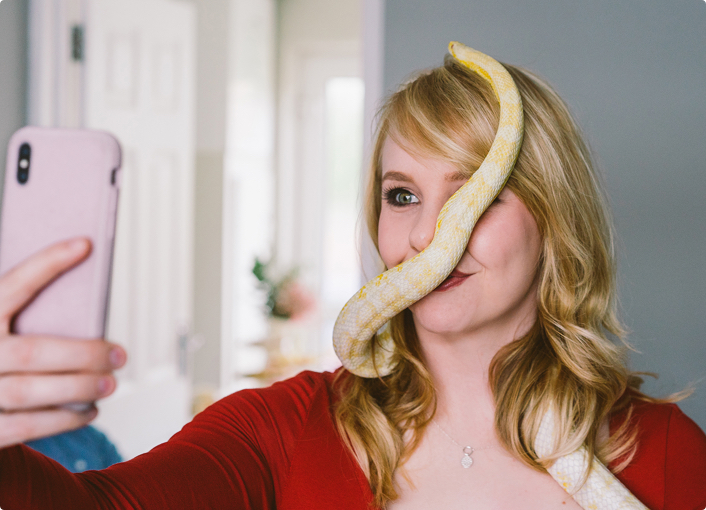
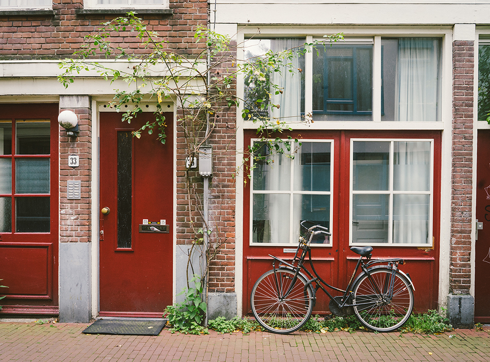

I'm a user experience designer, simply put, I design digital products and use insights about the users to make sure I design it well. In 2013 I graduated from Interactive Multimedia Design with first class honours and began my career in the tech & design industry. I'm currently working at TheAppBuilder, where we strive to improve workplace communications and culture with our internal comms platform. But hey, that's nothing you couldn't garner from scanning over my Linkedin profile.
What you might not know is that I'm a huge animal lover, an avid audiobook listener and I'm super competitive when it comes to Inflatapark. I enjoy spending my weekends finding new places to explore and new eating places to try, or going to a local comedy club for endless laughs. I also like running along Bangor's pretty coastline and lifting weights while making weird faces. (Let's call that, "Inflatapark training.")
I'll quite often be taking photos too. I love a photography session involving animals, and when my dog, Matisse, and my hamster, Eckles, are bored of posing for me, I'll find new creatures to photograph. I also work with clients to photograph a range of things, from local events and people, to food and restaurant interiors. I especially love a shoot involving people and their pets, so do contact me if you're interested in pet photography session.
More recently I've become very interested in the world of psychology, personal development, habits and mental health. Some books that have made a positive impact on me this year include Essentialism, Happy, Why We Sleep and Can’t Hurt Me. I love nothing more than having a great conversation about these things over a cuppa. Oh and Fleabag. Let's talk about Fleabag.